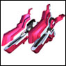

|
| 【ライブラリ】 らいぶらり [技術] |
| 「第二次ヴァルファスク大戦」後期に見つかった巨大データベース。 「EDEN」の本星「ジュノー」にある。 全ての情報にアクセス出来るのは「管理者」である「ルシャーティ」のみ。 |
| 【ラス・テラ浮遊防塁】 らす・てらふゆうぼうるい [惑星/衛星] |
| ヴァル・ファスク軍の浮遊防塁 |
| 【ラビリーズ・ハチェット】 らびりーず・はちぇっと [戦艦/兵器] |
| アームズ・アライアンスの三侯爵の一人ジュニエブルの乗る旗艦。 |
| 【ラム・テラ浮遊防塁】 らむ・てらふゆうぼうるい [戦艦/兵器] |
| 「ヴァル・ファスク」軍の浮遊防塁、ラス・テラの強化型 |
| 【ラムス・ジオ突撃艦】 らむす・じおとつげきかん [戦艦/兵器] |
| 「ヴァル・ファスク」軍の突撃艦 |
| 【ランゲ・ジオ重戦艦】 らんげ・じおじゅうせんかん [戦艦/兵器] |
| 「ヴァル・ファスク」軍の重戦艦 |
| 【蘭花】 らんふぁ [キャラ/通称] | |
| 「ムーンエンジェル隊」員の一人。フルネームは「蘭花・フランボワーズ」 紋章機GA-002「カンフーファイター」のパイロット。 現在は「EDEN」の大使として「NEUE」の惑星「マジーク」に駐留している。 |
|
| 【ランファスペシャル】 らんふぁすぺしゃる [娯楽/雑貨] |
| エルシオールの食堂にある辛さ1000倍カレーをはじめとする蘭花しか食べられないスペシャル料理。辛さが普通の辛さの千倍はある。蘭花以外は一口でダウンする殺人的な辛さだがアニスは修行の末、食べれるようになった。 |
| 【リグ・ゼオ戦闘機】 りぐ・ぜおせんとうき [戦艦/兵器] |
| 「ヴァル・ファスク」軍の戦闘機 |
| 【リッキー・カート】 りっきー・かーと [キャラ/通称] |
| GAI世界における有名なアイドル。愛称は「リｯキーくん」 |
| 【リペアウェーブ】 りべあうぇーぶ [必殺技] |
| 「ハーベスター」「ファーストエイダー」の放つ必殺技。 一度に複数の紋章機の修理を行うことができる。 何らかの理由でこれが使えないと非常に苦戦を強いられる。 |
| 【リリィ】 りりぃ [キャラ/通称] | |
| ルーンエンジェル隊メンバーの一人。フルネームは「リリィ･C（カラメル）･シャーベット」 紋章機RA-002「イーグルゲイザー」のパイロット。元はNEUEの一大勢力「セルダール王国」の近衛騎士団に勤めていた。性格は真面目で実直、任務至上主義が過ぎて時折ずれた行動を起こすことがある。 |
|
| 【ルーンエンジェル隊】 るーんえんじぇるたい [軍団/隊] |
| 「タクト」が「NEUE」で組織した新たな「エンジェル隊」 「カズヤ（主人公）」、「アプリコット」、「カルーア/テキーラ」、「ナノナノ」、「アニス」、「リリィ」で構成される。男性メンバーが存在する事が、「ムーンエンジェル隊」との大きな違いと言える。 |
| 【ルクシオール】 るくしおーる [兵器/戦艦] |
| 「第二次ヴァルファスク大戦」後に新造された「EDEN」の最新鋭戦艦。 「エルシオール」の設計思想を引き継ぎつつ、 「ヴァルファスク」との戦闘データを元に、数々の工夫が意欲的に組み込まれている。 |
| 【ルシャーティ】 るしゃーてぃ [キャラ/通称] | |
| EDNE星系「ジュノー」に存在する「ライブラリ」の管理者 登場時はヴァインによって操られていたが後に解放された。 操られていた時の記憶も残っており、操っていたヴァインの憎んでいたはずだったのだが最後まで憎みきれなかった |
|
| 【レクリエーションラウンジ】 れくりえーしょんらうんじ [施設] |
| エルシオールの娯楽施設。パンチングマシン、キャッチャーマシン、駄菓子でポン、卓球などあらゆるゲームができる。 アニスが施設の備品を壊すが、ミントが経営しているため、借金が増えつづけている。 |
| 【レゾム・メア・ゾム】 れぞむ・めあ・ぞむ [キャラ/通称] |
| 皇国の英雄タクト・マイヤーズが「エルシオール」に赴任してすぐに戦った男。 エオニアのクーデターの時にはすぐにエオニアにつきエオニアが倒されるとすぐに「真・正統トランスバール皇国」を打ちたてるなど変わり身が早い。 タクトには名前を忘れられていて、「レモン」や「メゾン」と間違えられた。 |
| 【レッド】 れっど [キャラ/通称] |
| エオニア直属の特務戦闘部隊ヘルハウンズ隊の一人。フルネームは「レッド・アイ」 普段から無口で用件だけしか言わない。合理主義で、不利だと思えば戦える状態でも引く冷静さを持っている。顔から胸あたりまで切られたような傷がある。 |
| 【レリックレイダー】 れりっくれいだー [兵器/戦艦] | |
|  | 「NEUE」製「紋章機」の1つ。形式番号RA-005 パイロットは「アニス･アジート」。スピード重視の近接戦闘型 必殺技は「ジェノサイドボンバー」 |
| 【ロウィル】 ろうぃる [キャラ/通称] |
| トランスバール侵攻艦隊総司令官であり、ヴァル・ファスクのNo.2。 幾多の戦いで功績を挙げ、ゲルンの信任も厚い人物。トランスバール進行艦隊総司令官としてタクト達に宣戦布告し、追い詰めるもヴァインの星系データ提供の協力により敗北。 |
| 【ロストテクノロジー】 ろすとてくのろじー [技術] |
| 「多次元文明」時代に発展した技術の総称。 基本的には各宇宙のテクノロジーを統合したものだが それぞれの宇宙単位で見れば、かなりの独創性を確認することができる。 日々研究が進められてはいるが、まだ謎の部分が多く、全てを使いこなしてはいない。 |
| 【ロゼル】 ろぜる [キャラ/通称] | |
| フルネームは「ロゼル・マティウス」 搭乗する機体は初の量産型紋章機「ホーリーブラッド」 パイロット養成機関を歴代トップの成績で卒業している。文武両道で何でもこなす天才肌の人物だが、実は影では努力を欠かさず、今の能力を身に着けている。人当たりも良く、すぐにエンジェル隊にもとけ込んだ |
|
| GA用語集にご応募いただきありがとうございました。 |
| ご応募いただいた用語については精査の上、GAII最新作「永劫回帰の刻」デラックスパック特典の小冊子、『エンサイクロペディアGA』に掲載させていただきます。 また、 ご応募いただいた方には、「GA用語集に力を貸していただいた方」としてお名前をこちらに掲載させていただきました。 この度はGA用語集にたくさんのご応募をいただき、本当にありがとうございました。 |
© BROCCOLI